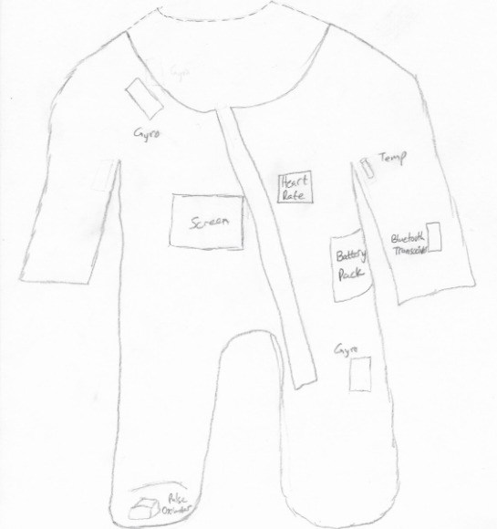
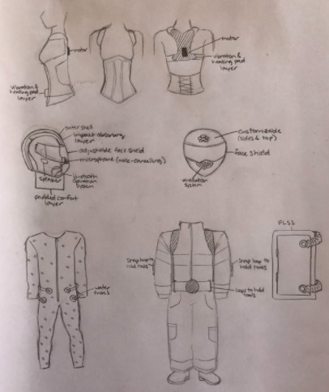
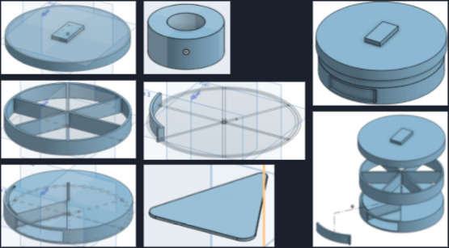
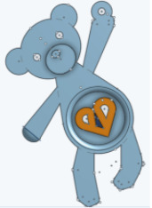

Engineering Design
In this project, my group and I designed a baby onesie that would prevent children who live in countries where child death rates are high from succumbing to SIDS.
Fashion Design and Technology
In this project, my group and I designed three garments to be worn by individuals in the workforce to optimize their workwear and provide greater safety and efficiency in their work.
Manufacturing a Snack Container
In this project, I followed the engineer design process from brainstorming, sketching, modeling, to prototyping my final optimized design of a chip container that was accessible for all users and easy to dispense chips from.
Manufacturing a Keychain
In this project, I designed a keychain that is comfortable to hold and to wear, has a tool contained in the design, and follows the constraints and requirements as assigned in the problem statement.
Basic Programming
Here is a basic interactive programming assignment I worked on at school. Conditional Creature Project
Prosthetic Robot Hand
Here is a video in which I teach how to construct a prosthetic robot hand using household items for an organization that works to bring STEM education to girls.